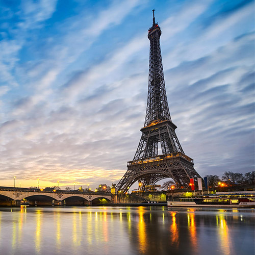

 Cuestionario sobre París
La ciudad de París se sitúa a ambos lados del río Sena.
La Basílica del Sacré Cœur es la única iglesia de Montmartre.
París se divide administrativamente en 20 distritos o arrondissements.
Cuestionario sobre Londres
Trafalgar Square es uno de los cuatro enclaves declarados
Patrimonio de la Humanidad por la Unesco con los que cuenta Londres.
El metro de Londres es el más antiguo del mundo.